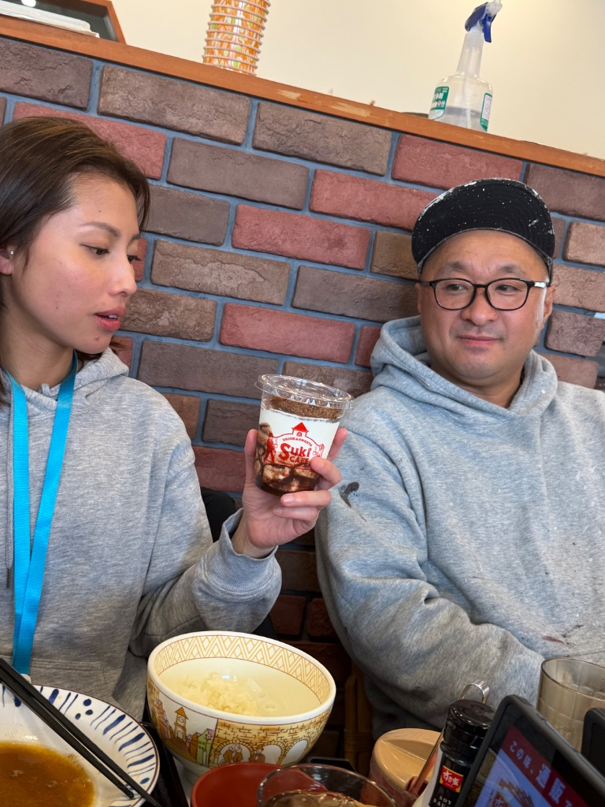

シロアリが2階まで…😱 でもすき家のシェイクは最高でした🍦
今日は町田市の金井っていう地域でお客様対応してきました！
雨漏りが原因か？シロアリが大量発生😱
しかも、
2階まで到達してる…
正直、かなり深刻なレベルです💦
シロアリが2階まで来てるって、
どれだけ放置されてたんだろう…
床下だけじゃなくて、
壁の中もボロボロになってる可能性大です😭
今日は打ち合わせだけで、
水曜日にしっかり調査することを約束しました。
お客様も心配そうだったけど、
「しっかり調査して、適切な対策をご提案しますね」
って伝えたら、少し安心してくれました✨
🍦 職人さんとすき家でランチ
打ち合わせが終わって、
近くの現場で作業してた職人さんと合流👷
で、ランチに行ったのがすき家🍛

※ 職人さんとのランチタイム
実は…
すき家のシェイクが美味しくて🍦
それが目的でした（笑）
牛丼ももちろん食べたけど、
シェイクがメインです（笑）

※ 目当てのシェイク🍦
職人さんも「社長、それシェイク飲みに来ただけでしょ」って
笑ってました😂
でも、こういう何気ない時間が
すごく大事だなって思うんです✨
水曜日の調査、しっかり頑張ります💪
シロアリ被害は早期発見が大事。
お客様の不安を少しでも軽くできるように、
誠実に対応していきます！
それにしても、
すき家のシェイク、また飲みたい🍦